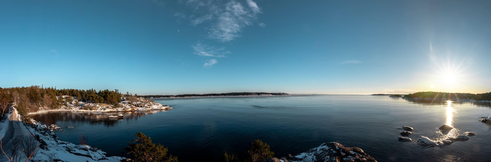

Über mich
Ich bin ein Softwareentwickler bei ICS / ACS. Ich habe mein BSc und MSc an der ETH Zürich erhalten. Ich habe mich in Machine Learning vertieft und die Masterarbeit im Bereich 3D Vision gemacht.
Schwerpunkte
- Computer Vision
- Controllable 2D / 3D Generation & Editing
- Eingebettete Systeme
Seit meiner Kindheit bin ich fasziniert von der Dynamik der Atmosphäre und der Natur, welche ich fotografisch festhalte.

Wetterstation Niederhelfenschwil
Eine automatische Wetterstation auf 605 m Höhe mit kontinuierlicher Datenerfassung und Überwachung.
Zu den Wetterdaten